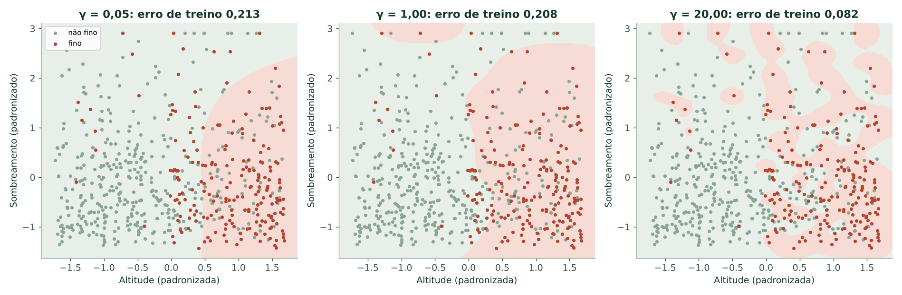
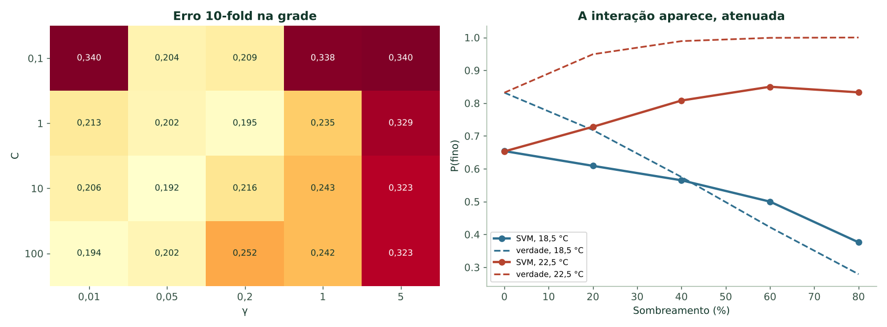

SVM com kernel radial (RBF)
A SVM com o produto interno trocado por uma semelhança gaussiana — fronteiras curvas sem construir variáveis, com C e γ escolhidos juntos.
Comece por aqui
A SVM linear só traça hiperplanos. A SVM com núcleo radial traça fronteiras curvas sem precisar construir as variáveis que as descrevem. O truque é que a solução da SVM depende dos dados apenas por meio de produtos internos entre pares de pontos; trocando o produto interno por uma função de semelhança — o núcleo —, a SVM passa a trabalhar num espaço de dimensão muito maior (infinita, no caso radial) sem nunca calculá-lo.
Na SVM radial, C e γ precisam ser escolhidos juntos. γ define o alcance da influência de cada ponto: grande, cada ponto só "vê" a si mesmo e a fronteira contorna cada lote; pequeno, todos se parecem e a fronteira fica quase reta. C define quanto custa errar. A tabela de erros na grade desta ficha mostra que o ótimo de um depende do outro.
O que é a SVM com núcleo
A função de decisão passa a ser \(f(x)=\sum_{i\in SV}\alpha_iy_iK(x_i,x)+b\): uma soma ponderada de semelhanças entre \(x\) e cada vetor de suporte. Com o núcleo radial, cada vetor de suporte é o centro de uma "colina" gaussiana de largura \(1/\sqrt\gamma\), e a fronteira é a curva de nível zero da soma das colinas.

| Núcleo | K(x, x′) | Uso |
|---|---|---|
| Linear | \(x^\top x^\prime\) | Fronteira linear: a SVM linear. |
| Polinomial | \((\gamma x^\top x^\prime+c_0)^d\) | Interações até a ordem d. |
| Radial (gaussiano) | \(\exp(-\gamma\lVert x-x^\prime\rVert^2)\) | O padrão: fronteiras suaves de qualquer forma. |
| Sigmoide | \(\tanh(\gamma x^\top x^\prime+c_0)\) | Histórico; nem sempre é um núcleo válido. |
Pressupostos e como verificá-los
| Pressuposto ou cuidado | Por que importa | Como verificar |
|---|---|---|
| Variáveis padronizadas | O núcleo usa a distância euclidiana. | scale = TRUE. |
| C e γ escolhidos juntos | O ótimo de um depende do outro. | Grade em escala logarítmica com tune(). |
| Variáveis relevantes | Ruído entra na distância, como no kNN. | Seleção prévia. |
| n moderado | O custo cresce entre n² e n³. | Para n grande, aproximações ou SVM linear. |
| Probabilidades | Não vêm da SVM. | Platt. |
Formulação e cálculo
Em que:
- \(\alpha_i\)
- pesos da solução dual; diferentes de zero só nos vetores de suporte, com \(0<\alpha_i\le C\)
- \(K\)
- o núcleo: semelhança entre dois pontos
- \(\gamma\)
- inverso do quadrado do alcance de cada ponto
Os \(\alpha_i\) resolvem o problema dual, que só envolve os dados por meio de \(K\):
Exemplo numérico: o núcleo entre o lote 1 e cinco outros
| Lote | |x₁ − x|² | γ = 0,05 | γ = 0,5 | γ = 5 |
|---|---|---|---|---|
| 2 | 6,151 | 0,7353 | 0,0462 | 0,0000 |
| 3 | 3,200 | 0,8521 | 0,2019 | 0,0000 |
| 4 | 7,125 | 0,7003 | 0,0284 | 0,0000 |
| 5 | 5,130 | 0,7738 | 0,0769 | 0,0000 |
| 6 | 7,453 | 0,6889 | 0,0241 | 0,0000 |
Com γ = 0,05, \(K=e^{-0{,}05\times6{,}151}=0{,}7353\): o lote 2 é "muito parecido" com o lote 1, embora esteja a uma distância de 2,5 desvios-padrão. Com γ = 5, todas as semelhanças são zero até a quarta casa: nenhum lote influencia a predição nos outros, e cada vetor de suporte só decide a sua própria vizinhança imediata. O padrão do e1071 e do scikit-learn é \(\gamma=1/p\) com variáveis padronizadas — aqui, 1/6 = 0,1667 —, um ponto de partida razoável, não uma escolha.
Propriedades
- Aproxima fronteiras de qualquer forma (o núcleo radial é universal).
- Problema convexo: sem mínimos locais.
- γ grande + C grande = sobreajuste; γ pequeno + C pequeno = fronteira quase linear.
- A solução continua esparsa: depende só dos vetores de suporte.
- O custo computacional cresce rapidamente com n.
- A SVR usa a perda ε-insensível: desvios menores que ε não custam nada.
Como interpretar os resultados
| Elemento | O que informa | Cuidado |
|---|---|---|
| Mapa do erro na grade C × γ | Região boa dos parâmetros. | Use escala log nos dois eixos. |
| Número de vetores de suporte | Complexidade efetiva. | Todos os pontos = sobreajuste. |
| Erro de treino | Quase nada. | Com γ grande, vai a zero. |
| Probabilidades de Platt | Para decisões com custo. | Calibração por validação interna. |
Como executar no R e em Python
Onde executar o código em Python
Não é preciso instalar nada: o Google Colab é um computador na nuvem, gratuito, que executa Python pelo navegador e já traz as bibliotecas usadas aqui (numpy, scipy e matplotlib).
svm() do e1071 com kernel = "radial" (o padrão), cost = C e gamma = γ; tune() com ranges = list(cost = …, gamma = …) faz a busca na grade por validação cruzada. Para regressão, a mesma função com resposta numérica (type = "eps-regression") e o argumento epsilon. O pacote kernlab (função ksvm) oferece mais núcleos e uma estimativa automática de γ (sigest). Em Python, sklearn.svm.SVC e SVR, com GridSearchCV.
library(e1071)
aj <- tune(svm, fino_f ~ alt + temp + chuva + somb + nfol + ph, data = cafe,
ranges = list(cost = 10^(-1:2), gamma = c(0.01, 0.05, 0.2, 1)))
aj$best.parameters
summary(aj$best.model)
Exemplo de aplicação
Contexto dos dados
Os dados são fictícios e foram criados pelo autor: 600 lotes de café, cada um com a nota sensorial (escala SCA, de 70,0 a 86,1) e seis variáveis da lavoura — altitude (600 a 1.500 m), temperatura média (14 a 26 °C), chuva anual (mm), sombreamento (%), nitrogênio foliar (dag/kg) e pH do solo. Um lote é fino quando a nota é 80 ou mais (204 lotes, 34,0%). O processo gerador é conhecido e foi desenhado para ter as duas estruturas que os modelos aditivos não representam: um degrau de +4,6 pontos acima de 1.050 m de altitude e uma interação — o sombreamento melhora a nota quando a temperatura passa de 20,5 °C e a piora abaixo disso —, além de partes suaves em chuva, nitrogênio e pH e um erro de desvio-padrão 1,55. Altitude e temperatura têm correlação de −0,822, como na realidade. Como a verdade é conhecida, sabem-se os dois pisos: nenhum modelo de regressão pode ter erro quadrático esperado abaixo de \(\sigma^2=2{,}4025\), e nenhum classificador pode errar menos que o erro de Bayes, 0,1596. O mesmo conjunto atravessa as dez fichas dos grupos de árvores e de classificadores, o que permite comparar todos os métodos na mesma régua.
Código em R
# SVM com núcleo radial (RBF): exemplo completo ----
# Pacote: e1071
# Dados fictícios: 600 lotes de café (arquivo cafe.csv, pasta scripts/ do site).
# Baixe o arquivo para a pasta de trabalho, ou leia direto do endereço:
url <- "https://cassiushenrique.github.io/ModelosEstatisticos/scripts/cafe.csv"
cafe <- if (file.exists("cafe.csv")) read.csv("cafe.csv") else read.csv(url)
str(cafe) # nota, fino (0/1), alt, temp, chuva, somb, nfol, ph
cafe$fino_f <- factor(cafe$fino, levels = c(0, 1), labels = c("nao", "fino"))
table(cafe$fino_f)
library(e1071)
f <- fino_f ~ alt + temp + chuva + somb + nfol + ph
# ---- 1. O núcleo: semelhança entre dois lotes padronizados
Z <- scale(cafe[, c("alt","temp","chuva","somb","nfol","ph")])
d2 <- sum((Z[1, ] - Z[2, ])^2)
sapply(c(0.05, 0.5, 5), function(g) exp(-g * d2))
# ---- 2. A grade de C (cost) e gamma, por validação cruzada
set.seed(1)
aj <- tune(svm, f, data = cafe, kernel = "radial",
ranges = list(cost = c(0.1, 1, 10, 100), gamma = c(0.01, 0.05, 0.2, 1, 5)),
tunecontrol = tune.control(cross = 10))
summary(aj)
plot(aj, transform.x = log10, transform.y = log10) # mapa do erro na grade
aj$best.parameters
# ---- 3. Sobreajuste: gamma grande decora o treino
for (g in c(0.05, 1, 5)) {
m <- svm(f, data = cafe, kernel = "radial", cost = 10, gamma = g)
cat("gamma", g, ": erro de treino", mean(predict(m) != cafe$fino_f),
"| vetores de suporte", m$tot.nSV, "\n") }
# ---- 4. A interação, com probabilidades de Platt
m <- svm(f, data = cafe, kernel = "radial", cost = aj$best.parameters$cost,
gamma = aj$best.parameters$gamma, probability = TRUE)
grade <- expand.grid(somb = seq(0, 80, 20), temp = c(18.5, 22.5))
grade <- transform(grade, alt = 1150, chuva = median(cafe$chuva),
nfol = median(cafe$nfol), ph = median(cafe$ph))
grade$p <- attr(predict(m, grade, probability = TRUE), "probabilities")[, "fino"]
grade
# ---- 5. Regressão por vetores de suporte (SVR) na nota
set.seed(1)
ajr <- tune(svm, nota ~ alt + temp + chuva + somb + nfol + ph, data = cafe,
ranges = list(cost = c(10, 100), gamma = c(0.05, 0.2), epsilon = c(0.1, 1, 2)))
summary(ajr)
A mesma análise em Python, com os resultados
Cole o código em um notebook do Google Colab ↗ e execute com Shift+Enter. Os valores abaixo são a saída desse código.
import numpy as np
# ------------------------------------------------------------------
# Bloco comum às fichas deste grupo: funções auxiliares e dados (cab16)
# ------------------------------------------------------------------
import numpy as np
from scipy.stats import norm
# ------------------------------------------------------------------
# Bloco comum às fichas deste grupo: funções auxiliares e dados (dados16)
# ------------------------------------------------------------------
import numpy as np
import pandas as pd
def le_csv(nome):
"""Lê o arquivo de dados da ficha: primeiro na pasta atual; se não
estiver lá (por exemplo, no Google Colab), direto do site."""
try:
return pd.read_csv(nome)
except FileNotFoundError:
return pd.read_csv('https://cassiushenrique.github.io/ModelosEstatisticos/scripts/' + nome)
# Dados fictícios: 600 lotes de café (arquivo cafe.csv, pasta scripts/ do site)
cafe = le_csv('cafe.csv')
ALT, TEMP, CHUVA = (cafe[k].to_numpy(float) for k in ('alt', 'temp', 'chuva'))
SOMB, NFOL, PH = (cafe[k].to_numpy(float) for k in ('somb', 'nfol', 'ph'))
NOTA = cafe['nota'].to_numpy(float); FINO = cafe['fino'].to_numpy(int)
NOMES=['alt','temp','chuva','somb','nfol','ph']
ROT={'alt':'Altitude','temp':'Temperatura','chuva':'Chuva','somb':'Sombreamento','nfol':'N foliar','ph':'pH'}
X=np.column_stack([ALT,TEMP,CHUVA,SOMB,NFOL,PH])
NC,PC=X.shape; SIGN=1.55
def f_nota(alt,temp,chuva,somb,nfol,ph):
deg=4.6*(np.asarray(alt)>=1050); rampa=0.0028*np.clip(np.asarray(alt)-700,0,None)
inter=np.where(np.asarray(temp)>20.5,0.052*np.asarray(somb),-0.030*np.asarray(somb))
agua=-2.6e-6*(np.asarray(chuva)-1450)**2
nitro=2.9*np.log(np.asarray(nfol)/1.6); acid=-1.9*(np.asarray(ph)-5.4)**2
return 74.0+deg+rampa+inter+agua+nitro+acid
def verdade(A): return f_nota(A[:,0],A[:,1],A[:,2],A[:,3],A[:,4],A[:,5])
# ------------------------------------------------------------------ fim do bloco comum
def c(v, d=4): return ('%.*f' % (d, v)).replace('.', ',')
def eqm(o, p): return float(np.mean((np.asarray(o) - np.asarray(p))**2))
def r2(o, p): return 1 - float(np.sum((np.asarray(o)-np.asarray(p))**2))/float(np.sum((np.asarray(o)-np.mean(o))**2))
def acur(o, p): return float(np.mean(np.asarray(o) == np.asarray(p)))
MU = verdade(X) # média verdadeira da nota
PVER = 1 - norm.cdf((80 - MU)/SIGN) # P(fino | x) verdadeira
ERRO_BAYES = float(np.mean(np.minimum(PVER, 1 - PVER)))
EQM_PISO = SIGN**2
def dobras(n, k, seed):
rg = np.random.default_rng(seed)
d = np.tile(np.arange(k), int(np.ceil(n/k)))[:n]; rg.shuffle(d); return d
def cv_reg(fabrica, A, y, k=10, seed=0, reps=1):
"""EQM por validação cruzada. fabrica() devolve um estimador sklearn novo."""
tot = []
for r in range(reps):
d = dobras(len(y), k, seed + 101*r); e = np.empty(len(y))
for j in range(k):
tr, te = d != j, d == j
m = fabrica().fit(A[tr], y[tr]); e[te] = y[te] - m.predict(A[te])
tot.append(float(np.mean(e**2)))
return float(np.mean(tot)), (float(np.std(tot, ddof=1)) if reps > 1 else 0.0)
def cv_clf(fabrica, A, y, k=10, seed=0, reps=1, prob=False):
"""Erro de classificação (e, se prob, log-loss e Brier) por validação cruzada."""
err = []; ll = []; br = []
for r in range(reps):
d = dobras(len(y), k, seed + 101*r); pred = np.empty(len(y)); pp = np.empty(len(y))
for j in range(k):
tr, te = d != j, d == j
m = fabrica().fit(A[tr], y[tr]); pred[te] = m.predict(A[te])
if prob: pp[te] = m.predict_proba(A[te])[:, 1]
err.append(float(np.mean(pred != y)))
if prob:
q = np.clip(pp, 1e-6, 1 - 1e-6)
ll.append(float(-np.mean(y*np.log(q) + (1 - y)*np.log(1 - q))))
br.append(float(np.mean((pp - y)**2)))
if prob: return float(np.mean(err)), float(np.mean(ll)), float(np.mean(br))
return float(np.mean(err)), (float(np.std(err, ddof=1)) if reps > 1 else 0.0)
def padroniza(A, ref=None):
ref = A if ref is None else ref
mu, sd = ref.mean(0), ref.std(0, ddof=1); return (A - mu)/sd, mu, sd
DADOS_TXT = ('600 lotes de café, nota sensorial (escala SCA, de 70 a 86) e seis variáveis de lavoura: '
'altitude, temperatura média, chuva anual, sombreamento, N foliar e pH. Lote "fino" = nota >= 80.')
# ------------------------------------------------------------------ fim do bloco comum
from sklearn.svm import SVC, SVR
from sklearn.preprocessing import StandardScaler
from sklearn.pipeline import make_pipeline
from sklearn.ensemble import RandomForestClassifier
y=FINO
print('LOTES DE CAFÉ:',DADOS_TXT)
print('Resposta: fino (1) ou não (0). Erro de Bayes = %s.'%c(ERRO_BAYES))
Z,mu,sd=padroniza(X)
print('\n'+'='*70)
print('O NÚCLEO GAUSSIANO: K(x, x\') = exp(-gamma |x - x\'|²)')
print('Mede a semelhança entre dois lotes; vale 1 para lotes iguais e cai a')
print('zero com a distância. gamma controla a velocidade da queda.')
d2=((Z[0]-Z[1:6])**2).sum(1)
print()
print('%8s %12s %12s %12s %12s'%('lote','|x1 - x|²','gamma=0,05','gamma=0,5','gamma=5'))
for i in range(5):
print('%8d %12s %12s %12s %12s'%(i+2,c(d2[i],3),*[c(np.exp(-g*d2[i])) for g in (0.05,0.5,5)]))
print()
print('Com gamma = 5 todo lote só "vê" a si mesmo: a fronteira contorna cada')
print('ponto. Com gamma = 0,05 todos se parecem: a fronteira quase reta.')
print('\n'+'='*70)
print('A GRADE DE C E gamma: erro 10-fold (5 repetições)')
Cs=[0.1,1,10,100]; gs=[0.01,0.05,0.2,1,5]
E=np.zeros((len(Cs),len(gs)))
for a,C in enumerate(Cs):
for b,g in enumerate(gs):
E[a,b],_=cv_clf(lambda C=C,g=g: make_pipeline(StandardScaler(),SVC(C=C,gamma=g)),X,y,10,0,5)
print()
print('%10s'%'C \\ gamma'+''.join('%10s'%c(g,2) for g in gs))
for a,C in enumerate(Cs): print('%10s'%c(C,1)+''.join('%10s'%c(E[a,b]) for b in range(len(gs))))
a,b=np.unravel_index(np.argmin(E),E.shape); Cb,gb=Cs[a],gs[b]
print()
print(' melhor: C = %s, gamma = %s, erro = %s'%(c(Cb,1),c(gb,2),c(E[a,b])))
print(' padrão do sklearn: gamma = 1/(p var(Z)) = 1/6 = %s'%c(1/6))
print('\n'+'='*70)
print('SOBREAJUSTE: erro de treino contra erro validado')
print()
print('%8s %8s %14s %14s %14s'%('C','gamma','erro treino','erro 10-fold','vet. suporte'))
for C,g in [(1,0.05),(Cb,gb),(10,1),(100,5)]:
m=make_pipeline(StandardScaler(),SVC(C=C,gamma=g)).fit(X,y)
er,_=cv_clf(lambda C=C,g=g: make_pipeline(StandardScaler(),SVC(C=C,gamma=g)),X,y,10,0,5)
print('%8s %8s %14s %14s %14d'%(c(C,1),c(g,2),c(1-acur(y,m.predict(X))),c(er),m[-1].n_support_.sum()))
print('\n'+'='*70)
print('A INTERAÇÃO, que a SVM linear não via')
print('Probabilidade de fino (SVM com Platt) numa grade de sombreamento,')
print('com altitude 1150 m e demais variáveis medianas, em dois climas:')
m=make_pipeline(StandardScaler(),SVC(C=Cb,gamma=gb,probability=True,random_state=0)).fit(X,y)
med=np.median(X,0)
print()
print('%12s %16s %16s %16s %16s'%('sombra (%)','SVM, 18,5 C','verdade, 18,5 C','SVM, 22,5 C','verdade, 22,5 C'))
for s_ in [0,20,40,60,80]:
out=[]
for T in (18.5,22.5):
x=med.copy(); x[0]=1150; x[1]=T; x[3]=s_
out+= [c(m.predict_proba(x[None,:])[0,1],3), c(float(1-norm.cdf((80-verdade(x[None,:])[0])/SIGN)),3)]
print('%12d %16s %16s %16s %16s'%(s_,*out))
print('\n'+'='*70)
print('COMPARAÇÃO FINAL (10 dobras x 3 repetições)')
print()
print('%-34s %10s %10s %10s'%('modelo','erro','log-loss','Brier'))
for nm,f in [('SVM linear (C = 0,01)',lambda: make_pipeline(StandardScaler(),SVC(kernel='linear',C=0.01,probability=True,random_state=0))),
('SVM RBF (C e gamma escolhidos)',lambda: make_pipeline(StandardScaler(),SVC(C=Cb,gamma=gb,probability=True,random_state=0))),
('SVM polinomial de grau 2',lambda: make_pipeline(StandardScaler(),SVC(kernel='poly',degree=2,C=1,coef0=1,probability=True,random_state=0))),
('random forest (300 árvores)',lambda: RandomForestClassifier(300,max_features=2,random_state=0))]:
er,ll,br=cv_clf(f,X,y,10,0,3,prob=True)
print('%-34s %10s %10s %10s'%(nm,c(er),c(ll),c(br)))
print('%-34s %10s'%('erro de Bayes',c(ERRO_BAYES)))
print('\n'+'='*70)
print('REGRESSÃO POR VETORES DE SUPORTE (SVR) na nota')
print('Perda epsilon-insensível: desvios menores que epsilon não custam nada.')
print()
print('%8s %8s %10s %14s %14s'%('C','gamma','epsilon','EQM 10-fold','vet. suporte'))
for C,g,e in [(10,0.2,0.1),(10,0.2,1.0),(10,0.2,2.0),(100,0.05,1.0),(30,0.1,1.0)]:
v,_=cv_reg(lambda C=C,g=g,e=e: make_pipeline(StandardScaler(),SVR(C=C,gamma=g,epsilon=e)),X,NOTA,10,0,3)
ns=make_pipeline(StandardScaler(),SVR(C=C,gamma=g,epsilon=e)).fit(X,NOTA)[-1].support_.size
print('%8s %8s %10s %14s %14d'%(c(C,0),c(g,2),c(e,1),c(v),ns))
print(' piso (sigma²) = %s'%c(EQM_PISO))
Resultados da execução
LOTES DE CAFÉ: 600 lotes de café, nota sensorial (escala SCA, de 70 a 86) e seis variáveis de lavoura: altitude, temperatura média, chuva anual, sombreamento, N foliar e pH. Lote "fino" = nota >= 80.
Resposta: fino (1) ou não (0). Erro de Bayes = 0,1596.
======================================================================
O NÚCLEO GAUSSIANO: K(x, x') = exp(-gamma |x - x'|²)
Mede a semelhança entre dois lotes; vale 1 para lotes iguais e cai a
zero com a distância. gamma controla a velocidade da queda.
lote |x1 - x|² gamma=0,05 gamma=0,5 gamma=5
2 6,151 0,7353 0,0462 0,0000
3 3,200 0,8521 0,2019 0,0000
4 7,125 0,7003 0,0284 0,0000
5 5,130 0,7738 0,0769 0,0000
6 7,453 0,6889 0,0241 0,0000
Com gamma = 5 todo lote só "vê" a si mesmo: a fronteira contorna cada
ponto. Com gamma = 0,05 todos se parecem: a fronteira quase reta.
======================================================================
A GRADE DE C E gamma: erro 10-fold (5 repetições)
C \ gamma 0,01 0,05 0,20 1,00 5,00
0,1 0,3400 0,2037 0,2090 0,3380 0,3400
1,0 0,2133 0,2017 0,1950 0,2347 0,3290
10,0 0,2060 0,1920 0,2163 0,2427 0,3227
100,0 0,1943 0,2017 0,2517 0,2423 0,3227
melhor: C = 10,0, gamma = 0,05, erro = 0,1920
padrão do sklearn: gamma = 1/(p var(Z)) = 1/6 = 0,1667
======================================================================
SOBREAJUSTE: erro de treino contra erro validado
C gamma erro treino erro 10-fold vet. suporte
1,0 0,05 0,1800 0,2017 297
10,0 0,05 0,1500 0,1920 264
10,0 1,00 0,0017 0,2427 445
100,0 5,00 0,0000 0,3227 600
======================================================================
A INTERAÇÃO, que a SVM linear não via
Probabilidade de fino (SVM com Platt) numa grade de sombreamento,
com altitude 1150 m e demais variáveis medianas, em dois climas:
sombra (%) SVM, 18,5 C verdade, 18,5 C SVM, 22,5 C verdade, 22,5 C
0 0,654 0,832 0,653 0,832
20 0,609 0,718 0,728 0,949
40 0,565 0,575 0,808 0,989
60 0,500 0,422 0,850 0,999
80 0,376 0,279 0,833 1,000
======================================================================
COMPARAÇÃO FINAL (10 dobras x 3 repetições)
modelo erro log-loss Brier
SVM linear (C = 0,01) 0,2178 0,4547 0,1470
SVM RBF (C e gamma escolhidos) 0,1933 0,4074 0,1316
SVM polinomial de grau 2 0,1894 0,4056 0,1302
random forest (300 árvores) 0,1911 0,3959 0,1286
erro de Bayes 0,1596
======================================================================
REGRESSÃO POR VETORES DE SUPORTE (SVR) na nota
Perda epsilon-insensível: desvios menores que epsilon não custam nada.
C gamma epsilon EQM 10-fold vet. suporte
10 0,20 0,1 4,6310 570
10 0,20 1,0 4,6742 369
10 0,20 2,0 4,5740 204
100 0,05 1,0 4,3731 367
30 0,10 1,0 4,5249 362
piso (sigma²) = 2,4025
| C \ γ | 0,01 | 0,05 | 0,2 | 1 | 5 |
|---|---|---|---|---|---|
| 0,1 | 0,3400 | 0,2037 | 0,2090 | 0,3380 | 0,3400 |
| 1 | 0,2133 | 0,2017 | 0,1950 | 0,2347 | 0,3290 |
| 10 | 0,2060 | 0,1920 | 0,2163 | 0,2427 | 0,3227 |
| 100 | 0,1943 | 0,2017 | 0,2517 | 0,2423 | 0,3227 |
| C | γ | Erro de treino | Erro 10-fold | Vetores de suporte |
|---|---|---|---|---|
| 1 | 0,05 | 0,1800 | 0,2017 | 297 |
| 10 | 0,05 | 0,1500 | 0,1920 | 264 |
| 10 | 1 | 0,0017 | 0,2427 | 445 |
| 100 | 5 | 0,0000 | 0,3227 | 600 |
| Sombra (%) | SVM, 18,5 °C | Verdade, 18,5 °C | SVM, 22,5 °C | Verdade, 22,5 °C |
|---|---|---|---|---|
| 0 | 0,654 | 0,832 | 0,653 | 0,832 |
| 20 | 0,609 | 0,718 | 0,728 | 0,949 |
| 40 | 0,565 | 0,575 | 0,808 | 0,989 |
| 60 | 0,500 | 0,422 | 0,850 | 0,999 |
| 80 | 0,376 | 0,279 | 0,833 | 1,000 |
| Modelo | Erro | Log-loss | Brier |
|---|---|---|---|
| SVM linear (C = 0,01) | 0,2178 | 0,4547 | 0,1470 |
| SVM radial (C = 10, γ = 0,05) | 0,1933 | 0,4074 | 0,1316 |
| SVM polinomial de grau 2 | 0,1894 | 0,4056 | 0,1302 |
| Random forest (300 árvores) | 0,1911 | 0,3959 | 0,1286 |
| Erro de Bayes | 0,1596 | — | — |
| C | γ | ε | EQM 10-fold | Vetores de suporte |
|---|---|---|---|---|
| 10 | 0,2 | 0,1 | 4,6310 | 570 |
| 10 | 0,2 | 1,0 | 4,6742 | 369 |
| 10 | 0,2 | 2,0 | 4,5740 | 204 |
| 100 | 0,05 | 1,0 | 4,3731 | 367 |
| Piso σ² | 2,4025 |
Leitura: a grade mostra a interação entre C e γ. A linha de C = 0,1 tem erro 0,34 nas pontas — penalidade forte demais com γ pequeno, ou alcance curto demais com γ grande: nos dois casos, o modelo prevê "não fino" para quase todos. O mínimo, 0,1920, está em C = 10 e γ = 0,05; mas C = 1 com γ = 0,2 dá 0,1950, e C = 100 com γ = 0,01 dá 0,1943. Há uma diagonal de combinações quase equivalentes.
O sobreajuste é nítido: com γ = 5 e C = 100, todos os 600 lotes são vetores de suporte, o erro de treino é zero e o validado é 0,3227 — praticamente o de quem chuta a classe majoritária.
A interação aparece. No frio, a probabilidade estimada cai com a sombra (de 0,654 para 0,376); no calor, sobe (de 0,653 para 0,850) — o padrão verdadeiro, que a SVM linear não podia representar. As inclinações são menores que as verdadeiras: a fronteira suave de γ = 0,05 atenua os efeitos locais. A SVM polinomial de grau 2, que representa exatamente interações de pares, teve erro ainda um pouco menor (0,1894).
Na regressão, a SVR é bem pior que os comitês de árvores (melhor EQM 4,3731, contra cerca de 3,0). Aumentar ε de 0,1 para 2,0 reduz os vetores de suporte de 570 para 204 sem piorar o erro — a perda ε-insensível ignora os desvios pequenos, que aqui são em grande parte ruído.
Erros comuns
| Erro | Como evitar |
|---|---|
| Escolher C e γ separadamente | Use uma grade conjunta, em escala log. |
| Não padronizar | O núcleo é função da distância. |
| Aceitar os padrões sem validar | γ = 1/p é só um ponto de partida. |
| Interpretar o erro de treino | Com γ grande, é zero. |
| Usar com n muito grande | O custo explode; use SVM linear ou aproximações. |
| Esperar coeficientes interpretáveis | Não há w no espaço original. |
Alternativas e quando cada uma é preferível
| Procedimento | Quando preferir |
|---|---|
| SVM linear | Muitas variáveis (texto), fronteira linear. |
| Random forest | Variáveis em escalas diferentes, irrelevantes, categóricas. |
| kNN | Ideia semelhante (semelhança local), sem otimização. |
| Rede neural (MLP) | Fronteiras curvas com n grande. |
| Processos gaussianos | Mesmos núcleos, com probabilidades bayesianas. |
| SVM polinomial | Quando se suspeita de interações de ordem baixa. |
- Padronize as variáveis.
- Faça uma grade de C e γ em escala log com validação cruzada.
- Refine a grade em torno do mínimo.
- Confira o número de vetores de suporte.
- Compare com a SVM linear e com uma floresta.
- Use Platt se precisar de probabilidades.
Referências desta ficha
- CORTES, Corinna; VAPNIK, Vladimir. Support-vector networks. Machine Learning, v. 20, n. 3, p. 273-297, 1995.
- BOSER, Bernhard E.; GUYON, Isabelle M.; VAPNIK, Vladimir N. A training algorithm for optimal margin classifiers. In: ANNUAL WORKSHOP ON COMPUTATIONAL LEARNING THEORY, 5., 1992, Pittsburgh. Proceedings [...]. New York: ACM, 1992. p. 144-152.
- SCHÖLKOPF, Bernhard; SMOLA, Alexander J. Learning with kernels. Cambridge: MIT Press, 2002.
- HSU, Chih-Wei; CHANG, Chih-Chung; LIN, Chih-Jen. A practical guide to support vector classification. Taipei: National Taiwan University, 2003. Disponível em: https://www.csie.ntu.edu.tw/~cjlin/papers/guide/guide.pdf.
- SMOLA, Alex J.; SCHÖLKOPF, Bernhard. A tutorial on support vector regression. Statistics and Computing, v. 14, n. 3, p. 199-222, 2004.
- KARATZOGLOU, Alexandros; SMOLA, Alex; HORNIK, Kurt; ZEILEIS, Achim. kernlab: an S4 package for kernel methods in R. Journal of Statistical Software, v. 11, n. 9, p. 1-20, 2004.
- PLATT, John C. Probabilistic outputs for support vector machines and comparisons to regularized likelihood methods. In: SMOLA, A. et al. (ed.). Advances in large margin classifiers. Cambridge: MIT Press, 1999. p. 61-74.
- HASTIE, Trevor; TIBSHIRANI, Robert; FRIEDMAN, Jerome. The elements of statistical learning. 2. ed. New York: Springer, 2009.
- JAMES, Gareth; WITTEN, Daniela; HASTIE, Trevor; TIBSHIRANI, Robert. An introduction to statistical learning: with applications in R. 2. ed. New York: Springer, 2021.
- MEYER, David et al. e1071: misc functions of the Department of Statistics, Probability Theory Group, TU Wien. R package. Disponível em: https://CRAN.R-project.org/package=e1071.
- R CORE TEAM. R: a language and environment for statistical computing. Vienna: R Foundation for Statistical Computing, 2026. Disponível em: https://www.r-project.org/.
- POSIT TEAM. RStudio: integrated development environment for R. Boston: Posit Software, PBC. Disponível em: https://posit.co/download/rstudio-desktop/.
- PEDREGOSA, Fabian et al. Scikit-learn: machine learning in Python. Journal of Machine Learning Research, v. 12, p. 2825-2830, 2011. (Função
sklearn.datasets.load_iris.) - VIRTANEN, Pauli et al. SciPy 1.0: fundamental algorithms for scientific computing in Python. Nature Methods, v. 17, p. 261-272, 2020. DOI: 10.1038/s41592-019-0686-2. (Funções do módulo
scipy.stats.) - HARRIS, Charles R. et al. Array programming with NumPy. Nature, v. 585, p. 357-362, 2020. DOI: 10.1038/s41586-020-2649-2.
- HUNTER, John D. Matplotlib: a 2D graphics environment. Computing in Science & Engineering, v. 9, n. 3, p. 90-95, 2007.
- GOOGLE. Google Colaboratory. Disponível em: https://colab.research.google.com/.
- As figuras desta ficha foram elaboradas pelo autor.

Prof. Dr. Cássius Henrique Xavier Oliveira
Professor · ICTIN/UFLA · Estatística, Confiabilidade e Ciência de Dados.
Conheça minha trajetória e projetos →